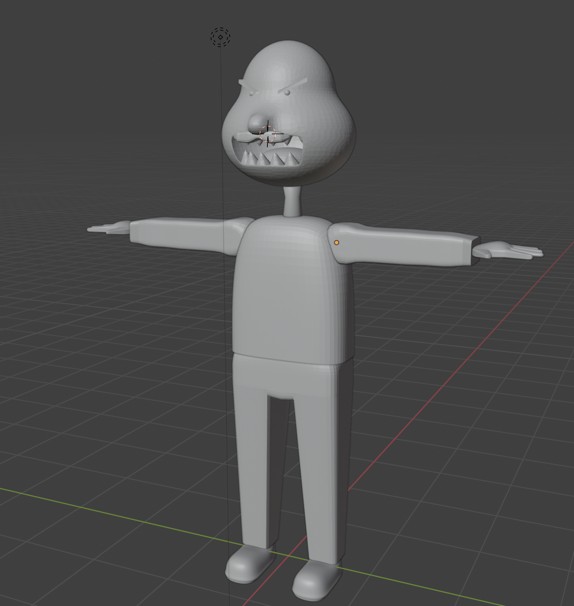
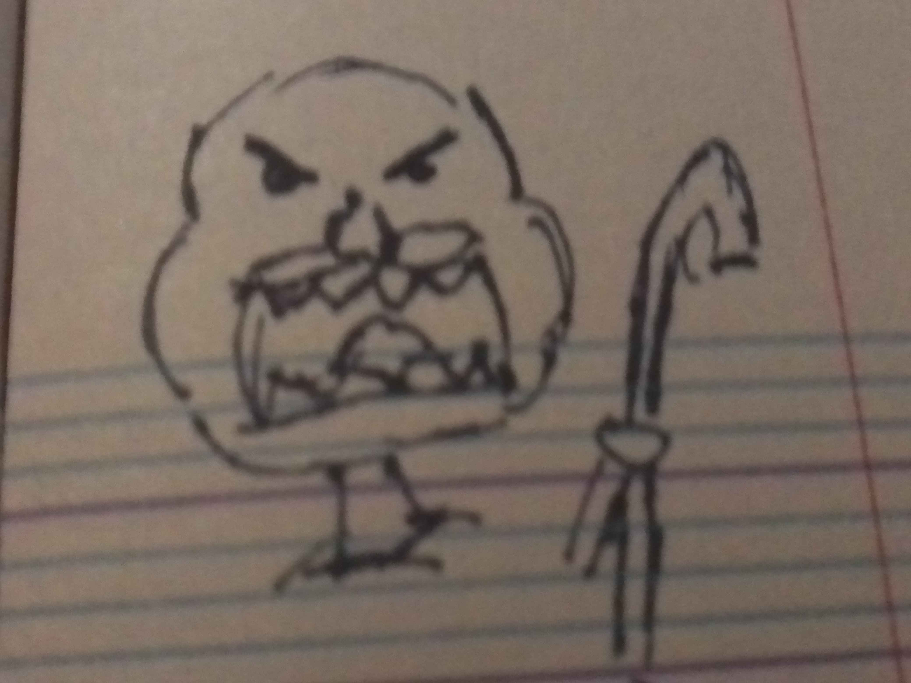

Vieillard Monstrueux en 3D - 2025
Character Design & Modelling & Rigging
En 2025 j'ai suivi un cours de Motion Design à Paris. Dans celui-ci, j'ai appris à réaliser des personnages en 3D sur blender, à leur ajouter des articulations (rigging) et à les animer.
Présentation
J'avais la possibilité de réaliser le modèle 3D de mon choix. J'ai donc décidé de m'inspirer d'un dessin que j'avais réalisé au lycée en imaginant à quoi ressemblerait les parties que je n'avais pas dessiné.

